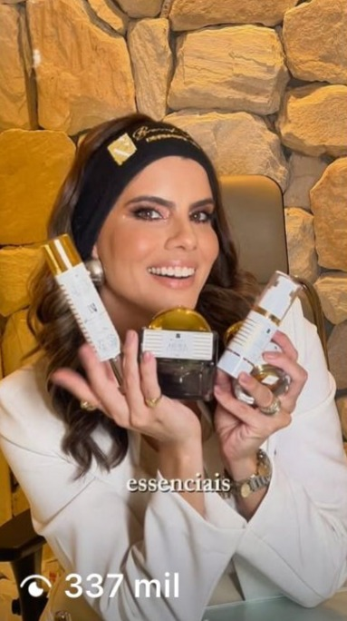
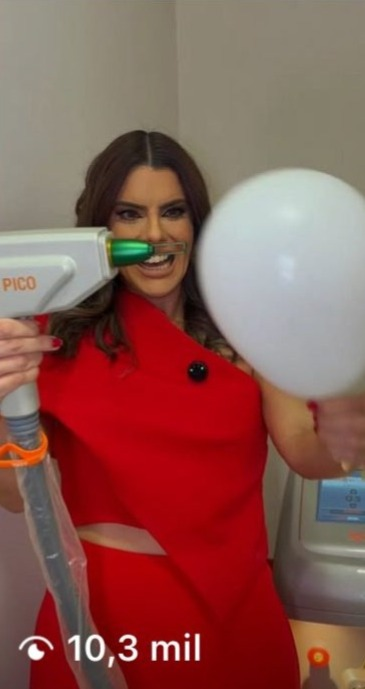
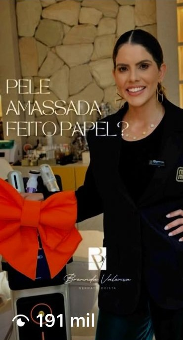

Resultados reais em social media




Conteúdos estratégicos que geram centenas de milhares de visualizações e performance acima da média — comprovado por métricas reais.
Resultados são consequência de estratégia. Os números apresentados mostram um trabalho orientado por dados, performance e alcance orgânico real. Se o seu objetivo é social media com resultados mensuráveis e crescimento consistente, este é o próximo passo.